B
The Behaviour Hive
The Calm Button
Step-by-step calm, right when it's needed.
Feature Guide · Trial Programme Edition
For technical help, contact daniel@thebehaviourhive.com
Chapter 1
What the Calm button is
The Calm button puts your child's own clinician-designed strategies one tap away, right when things are getting hard — not buried in a document you can't find in the moment.
It lives as the fourth item in your bottom navigation, always in the same place. It has exactly two states:
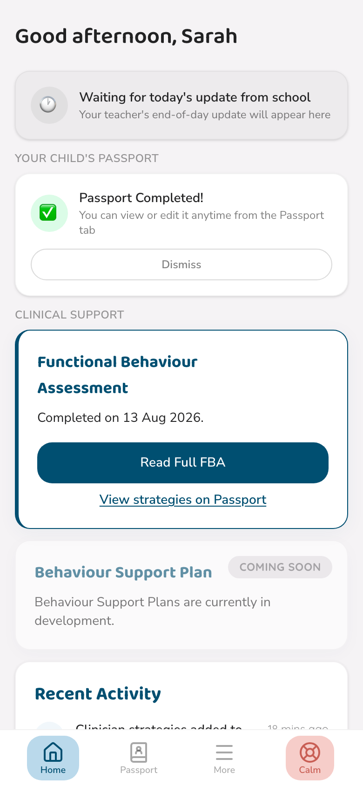
Live
Warm colour, taps straight through
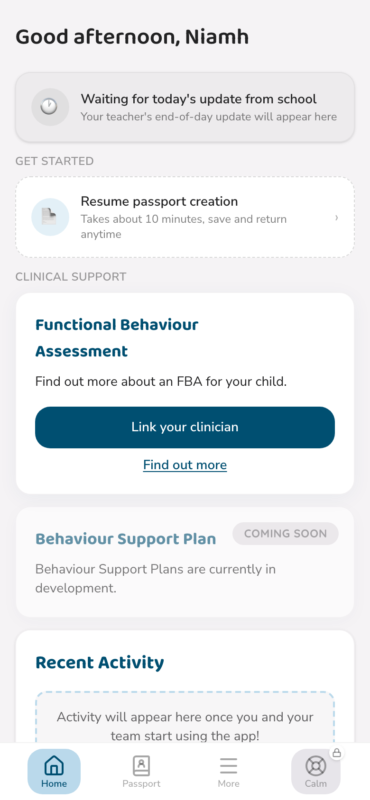
Locked
Grey, with a small padlock
The button unlocks automatically once two things are both true: your child's Functional Behaviour Assessment (FBA) is complete, and your clinician has published at least one Calm Card from it. Until then, tapping the locked button opens a short explanation instead of the flow itself.
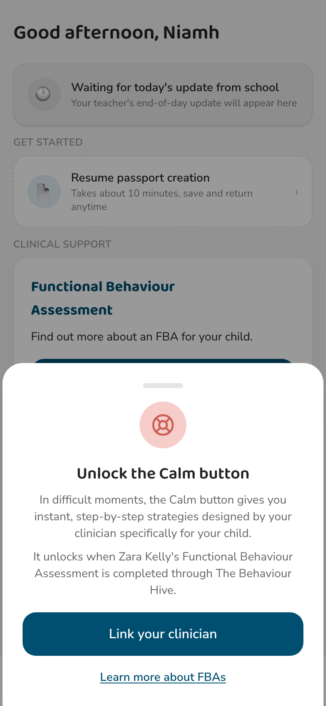
Tapping the locked button explains exactly what's still needed to unlock it
Nothing to set up
You don't request or activate the Calm button yourself — it simply appears live the moment your clinician has it ready. There's no separate step on your side.
Chapter 2
Using it, in the moment
Tap the Calm button and you're asked one simple question: what's going on right now?
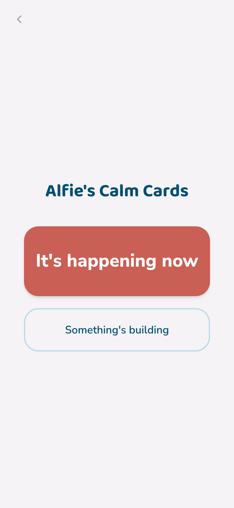
Two doors — pick whichever matches the moment
There's no wrong answer here. Pick "It's happening now" if things are already at their hardest, or "Something's building" if you can see it coming. Either door takes you somewhere useful.
Narrowing it down (optional)
If your clinician has tagged cards with specific triggers, you'll see a quick, optional screen of tags — noise, transitions, whatever fits. Tap what applies, or skip it entirely with "Not sure."
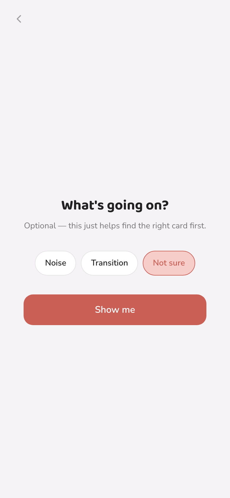
Entirely optional — it just helps surface the most relevant card first
The cards themselves
Each card is short and concrete — usually two or three plain steps, written by your clinician specifically for your child. Swipe to move between cards; the dots at the bottom show where you are.
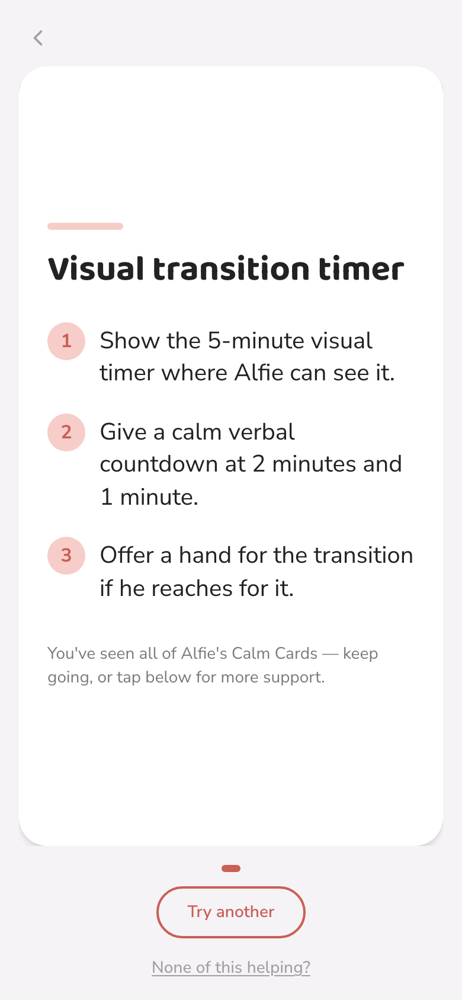
A Calm Card mid-carousel
The safety line
Every card has a quiet link at the bottom: "None of this helping?" It's always there, on every card, and it's never triggered by accident — no swipe or gesture can reach it, only a deliberate tap.
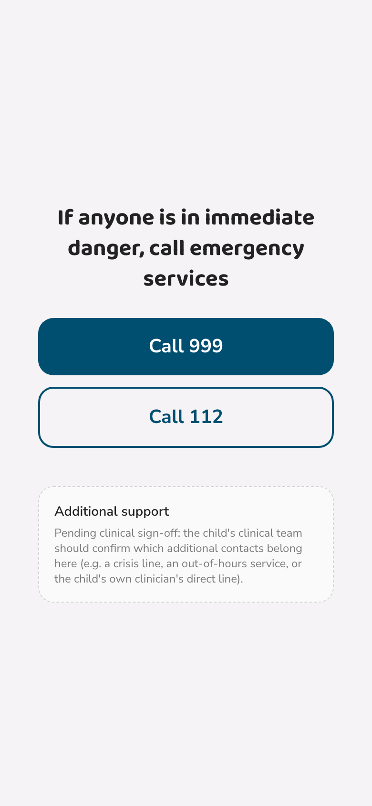
Emergency numbers, front and centre — no other prompts on this screen
This screen exists for the moments a card genuinely isn't enough. It shows nothing else — no logging prompt, no rating ask — just the numbers that matter, immediately.
Chapter 3
After you leave
Leaving normally (not through the safety line) asks one quick, optional question about the last card you looked at.
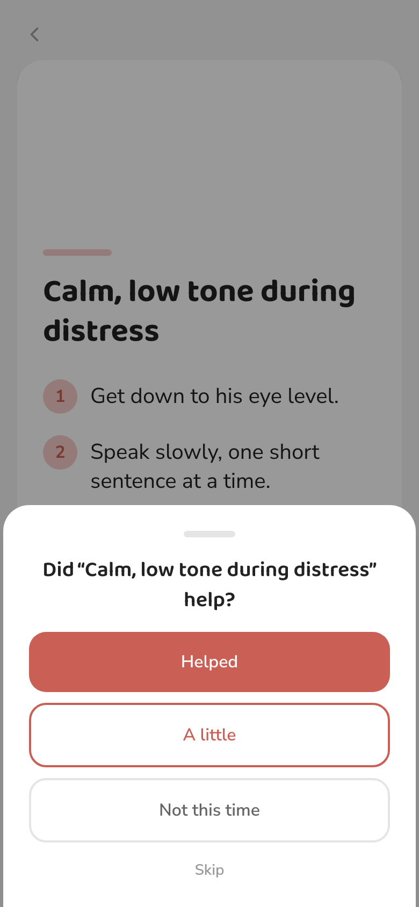
One tap, no confirmation screen — you're straight through to the next step
Why we ask
Your answer helps your clinician see which strategies are actually working day to day, at home and at school — not just on paper. It's signal, not a test, and it's always skippable. This never appears on the safety line, no matter what.
Logging what happened
Right after, you're gently asked whether it's worth logging the incident properly — useful for spotting patterns over time, but entirely optional.
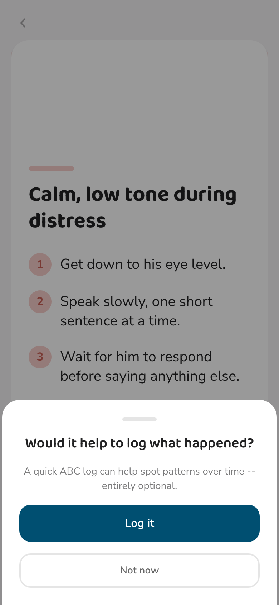
"Not now" is always right there, no less prominent than "Log it"
Choose "Not now" and you'll find a gentle reminder waiting on your home screen next time you open the app — nothing pushy, just there if you want it.
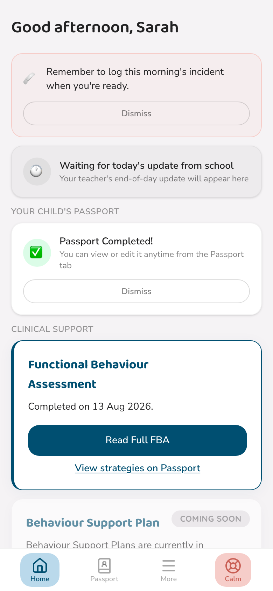
A quiet reminder card, dismissible whenever you're ready
Chapter 4
Setting it up, for clinicians
Calm Cards are authored inside the FBA workspace, in the same Recommendations section as your written strategies — each card is tied to a specific recommendation, home, school, or shared.
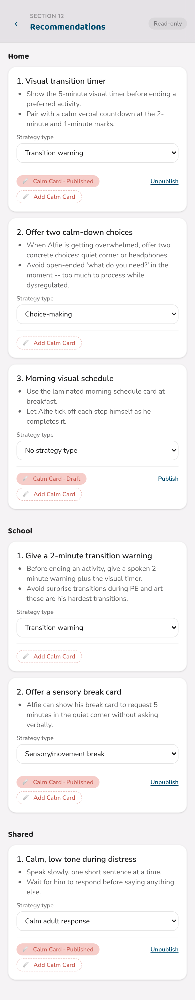
Every strategy entry can carry its own Calm Card — published, draft, or none yet
Any recommendation without a card yet shows a simple "+ Add Calm Card" — including on an already-locked, finalised FBA. Adding or editing a card's content is metadata, not a change to the assessment itself, so it stays available even after finalisation.
- Write two or three short steps. Plain, concrete language — this is what a parent reads mid-crisis, not clinical shorthand.
- Choose a door. "Something's building" for prevention, "It's happening now" for de-escalation.
- Tag it, optionally. Trigger tags help the parent-facing narrowing screen surface the right card faster.
- Publish when ready. A card sits as a private draft until you publish it — nothing reaches a parent before you're satisfied with it.
The Calm button only goes live for a family once the FBA is completed and at least one card is published. Drafts are invisible to parents, however many you have.
Checking it's live
The child's Clinical File carries a small tag right under their name whenever the button is genuinely live for that family.
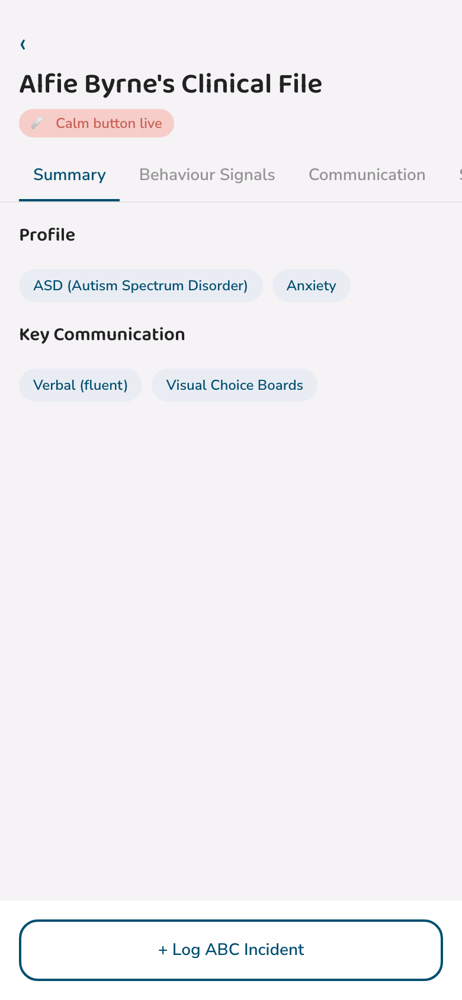
"Calm button live" — a quick, always-visible confirmation
The red notice
If a parent ever taps the safety line, it's not silent on your end. A high-visibility red notice appears on your dashboard immediately, and stays there — no auto-dismiss, no timeout — until you acknowledge it.
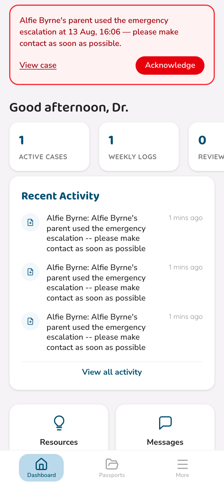
Persists until you tap Acknowledge — this is deliberately not something that can be missed
Tap "View case" to go straight to that child's Clinical File, or "Acknowledge" once you've made contact. This is a genuine emergency-support signal, separate from ordinary clinical review — please treat it accordingly.
Chapter 5
Help & Support
A few common questions about the Calm button specifically.
The Calm button still shows locked, but I know the FBA is finished.
Both conditions have to be true — a completed FBA, and at least one published Calm Card. Check with your clinician that they've published at least one card, not just saved it as a draft.
I tapped a card by accident while scrolling — did that count as anything?
No. Viewing a card never records anything on its own. Only leaving normally (which offers the optional rating) or the deliberate safety-line tap create any record.
As a clinician, can I still edit a Calm Card after the FBA is locked?
Yes — the strategy type tag and the card itself are both editable post-hoc, on a locked FBA, exactly as described in Chapter 4. The assessment content itself stays locked; the Calm Card is treated as a companion layer.
Does viewing a Calm Card notify the clinician?
No — only the safety line does that, and it's genuinely urgent when it fires. Ordinary use of the Calm button is private to the family, aside from the optional, anonymous-feeling rating.
Still stuck?
For technical help, contact daniel@thebehaviourhive.com